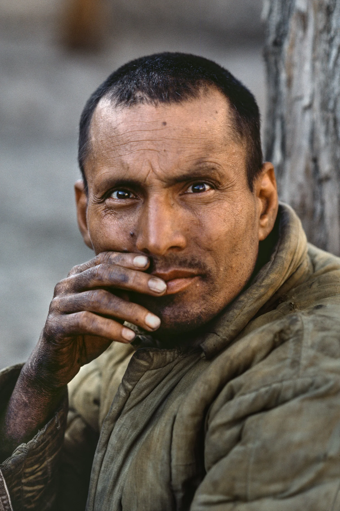
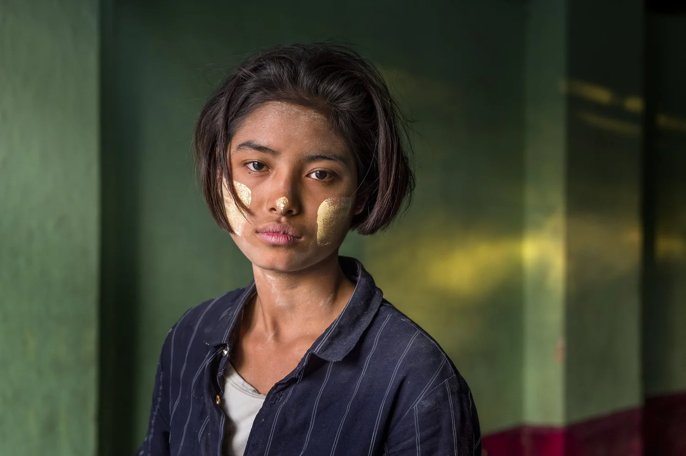

01

Bhutan
02
Ritratto
03

L'anima del mondo in uno scatto
Steve McCurry è uno dei più grandi maestri della fotografia contemporanea. Punto di riferimento per un larghissimo pubblico, ogni sua immagine racchiude un universo di esperienze ed emozioni, documentando conflitti, culture che scompaiono e tradizioni antiche.